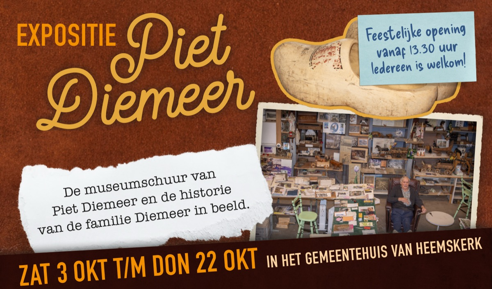
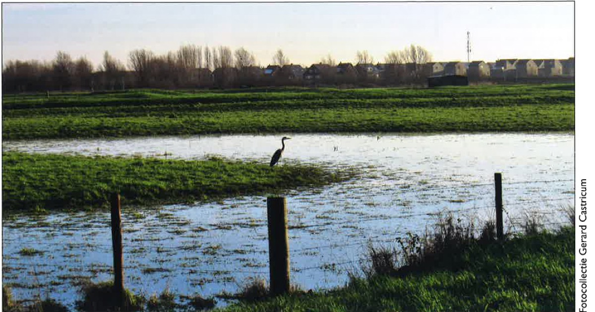
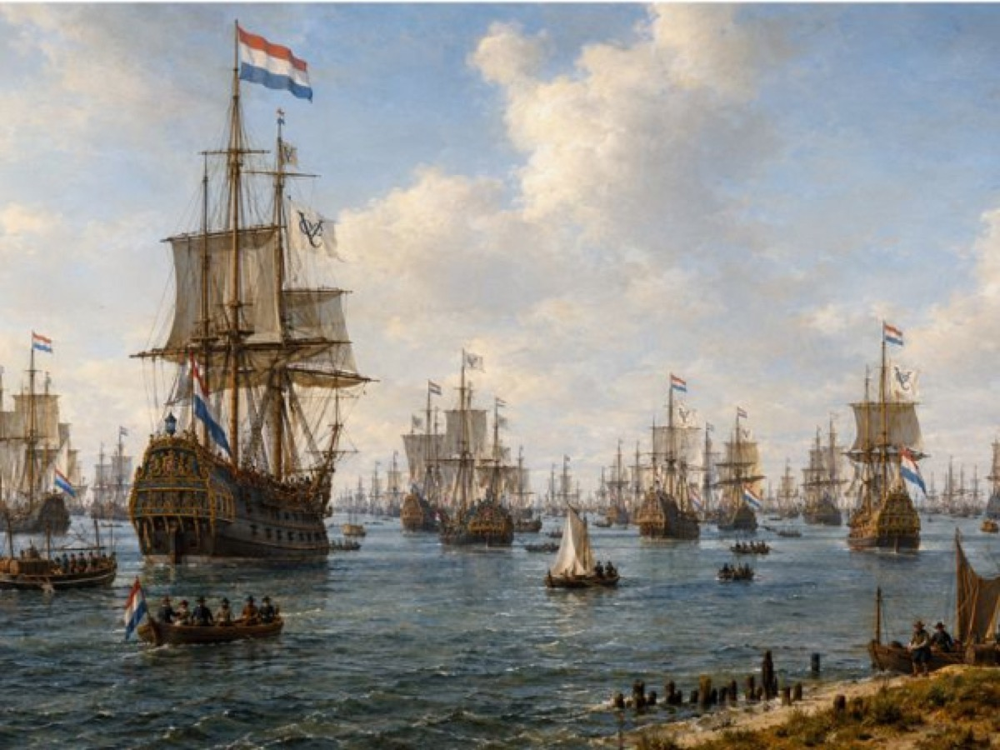
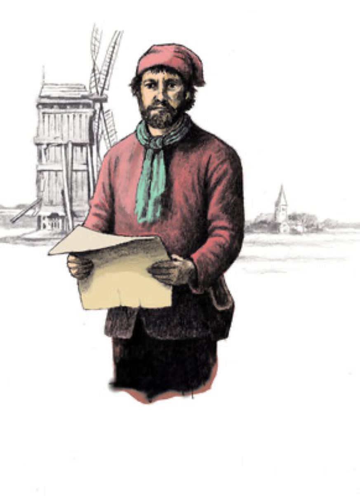
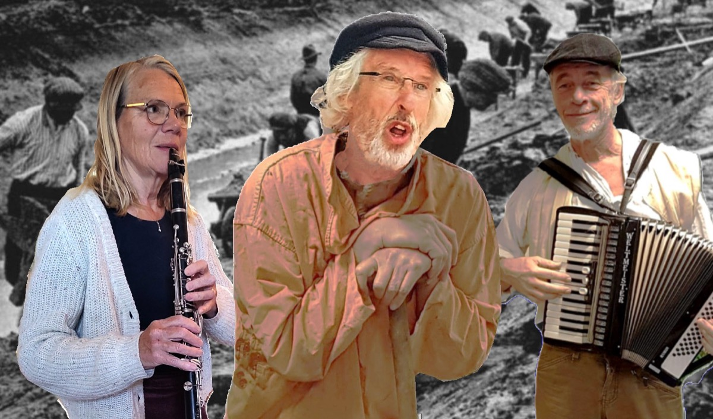
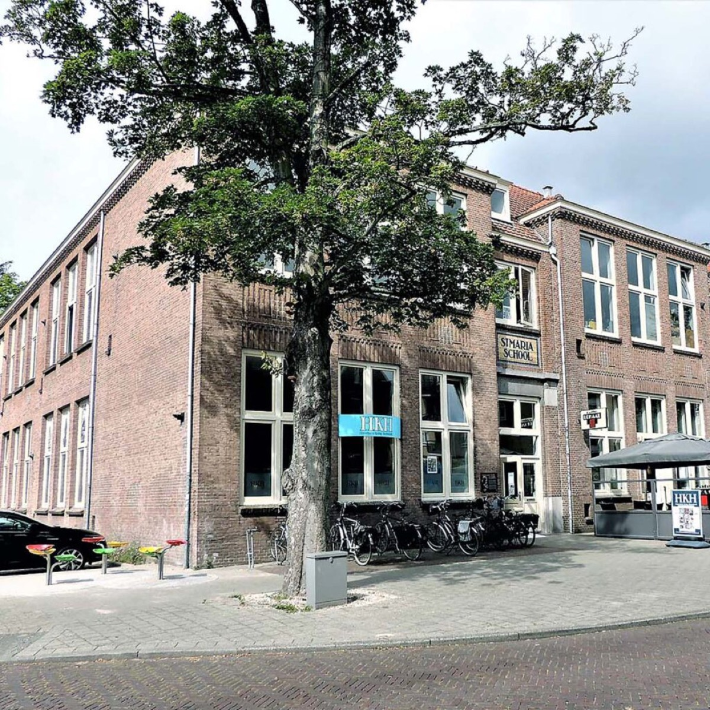

Home › Agenda
Agenda
Lezingen, filmmiddagen, wandelingen en exposities. Inschrijven kan direct op de pagina van de activiteit; is een activiteit vol, dan kunt u op de wachtlijst.
AllesLezingenFilmsWandelingenExpositiesLedenvergaderingenVan partners📅 Abonneren op de kalender
Historisch Huis open
elke maandag 14.00–16.00 uur
Vaste momenten
1e en 3e vrijdagmiddag · 4e dinsdagavond
oktober 2026
za–do3t/m 22 okt
Expositie: de museumschuur van Piet Diemeer
Hal gemeentehuis, Maerten van Heemskerckplein 1 · tijdens openingstijden
Expositie · gratis · geen inschrijving nodig

vr16okt
De Zoektocht in het Noorderveld
Historisch Huis · 14.00–16.00 · Gerard Castricum
Presentatie · gratis · max. 25 personen

di20okt
Lezing: het Palmhoutwrak
Bibliotheek Beverwijk, Kerkplein 5 · 19.30–21.30 · Thijs Coenen (RCE)
Lezing · Maand van de Geschiedenis · gratis

di27okt
Lezing over Cornelis Corneliszoon
Historisch Huis · 19.30–21.30
Lezing · gratis · max. 25 personen

november 2026
di17nov
Piet Paree – De terugkeer van een kanaalgraver
De Cirkel, A. Verherentstraat 1 · 20.00–21.30
Voorstelling · € 5,00 · leden € 3,50

wo19nov
Najaarsledenvergadering
Historisch Huis · 19.30
Ledenvergadering · presentatie nieuwe Heemskring · begroting 2027
